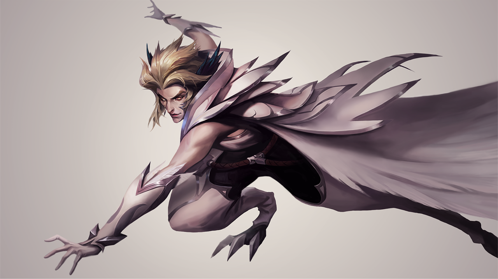

· 디콘디를 소개합니다! ·
디지털콘텐츠디자인과는 기업 맞춤형 교육과정으로 전면
개편하여, 실무형 교육과 사업 수요 맞춤형 디자이너를 육성합니다.
▼
YouTube / 오산대디지털콘텐츠디자인 - 디자인에 관심있는 친구들이 모인 곳, 오산대 DCON
:: OSAN UNIVERISTY ::
영상스튜디오실, 웹UI/UX 스마트강의실, 스마트 멀티룸, 오픈 스튜디오,
프로젝트 회의실 등 전용 실습실에서 다양하고 현장감 있는 수업을 진행합니다.

위 작품은 교내 기기와 프로그램을 사용하여 제작한 게임캐릭터(모작) 입니다.